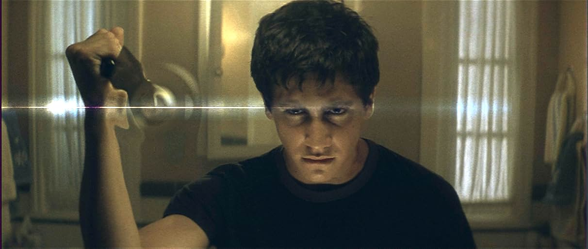
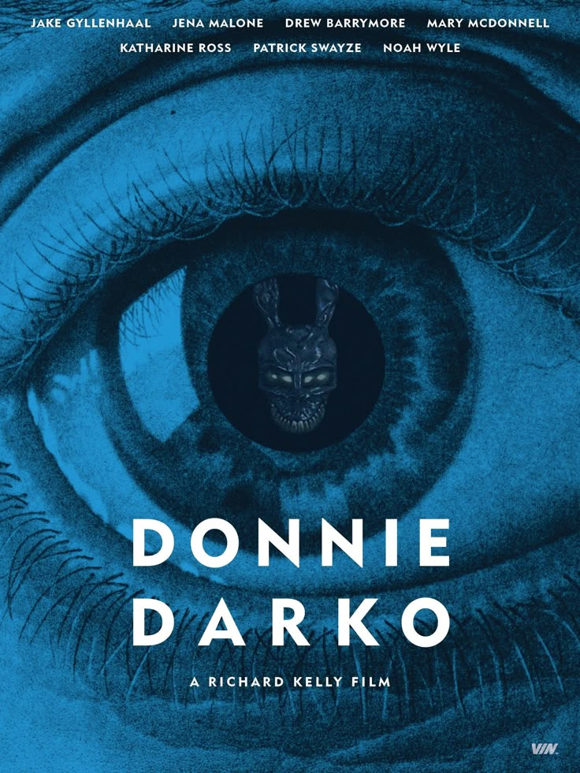

TEORÍAS SOBRE DONNIE DARKO
¿Viajes en el tiempo o viaje espiritual?
Una de las teorías más populares sostiene que la historia es una mezcla de ciencia ficción y espiritualidad. El "Universo Tangente" es interpretado por algunos como una manifestación simbólica de la conciencia de Donnie: un estado de transición entre la vida y la muerte donde debe redimir sus errores o cumplir una misión cósmica.
El determinismo y el libre albedrío
Donnie aparentemente tiene la libertad de actuar, pero todo lo que hace lo lleva inevitablemente a su destino final. Esta tensión entre destino y decisión personal ha dado pie a debates filosóficos sobre si sus acciones fueron realmente libres o si el universo simplemente lo estaba empujando hacia el sacrificio desde el principio.
Frank: ¿ángel, guía o víctima?
Frank es una figura que ha generado múltiples teorías. ¿Es una entidad enviada por el universo? ¿Una alucinación? ¿Una víctima que, paradójicamente, debe morir para salvar a todos? Algunos creen que es una especie de "psicopompo", una figura mitológica que guía a las almas entre mundos. Otros lo ven como una víctima inocente atrapada en el ciclo temporal.
